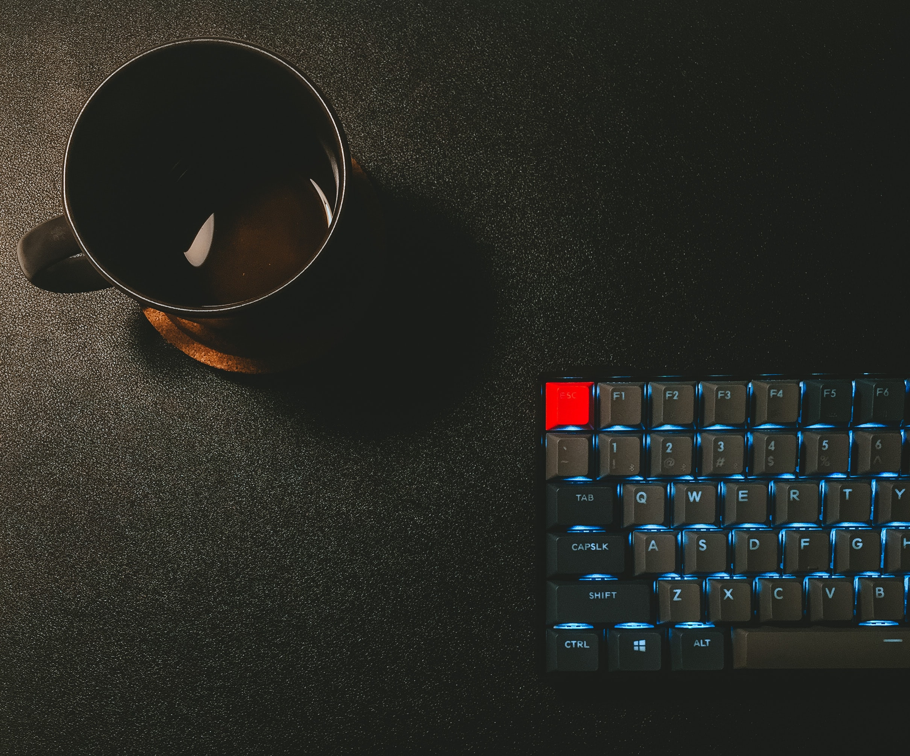

More About Me
Currently a student, and I have various interest particularly in the field of computers, everything regarding technology excites me. My story began with the DIGIT magazine, reading all the reviews in the library itself and then taking the DVD attached to the home to test them out. From somewhere there I could feel my inclination toward the technology. Later in 10 standard shifted to linux and since then huge fan of linux, I like clean build setup and I feel ease using arch with i3 as window manager. Recently started working on opensource projects through small contributions. Also, I have an interest in Photography.I have a good collection of pictures to showcase to.
I believe in doing something for the society. If you share a similar thought contact me on mail